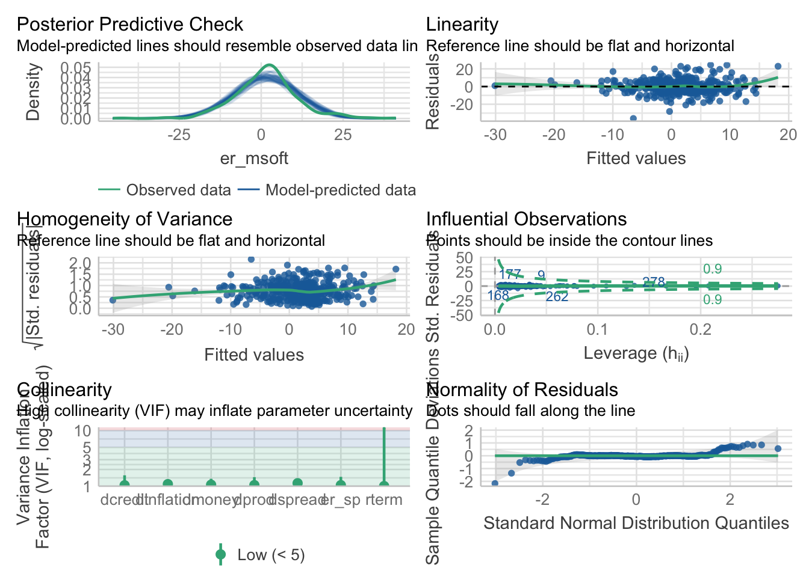

Aplicación 3.1 (Evaluación, validación y especificación del MRL): El modelo APT de valoración de activos
En esta aplicación se estimará un modelo de regresión basado en la teoría de los precios de arbitraje, que desde el punto de vista econométrico es una generalización de la especificación CAPM expuesta en la Aplicación 2.1, a la que se le añaden factores macroeconómicos.
Definamos la rentabilidad de un activo financiero (en porcentaje) como \(R=100×log[(p_{1}+d)/p_{0}\), donde \(p_{1}\) y \(p_{0}\) son, respectivamente, los precios de cotización del valor (título u obligación) al final y al principio de un período de tiempo y \(d\) es el dividendo cobrado (si lo hay) durante ese período. Denominemos por \(Rf\) al rendimiento de un activo libre de riesgo. Finalmente, denotemos por \(Rm\) a la rentabilidad que ofrece la cartera de mercado.
En este ejercicio se va a estimar el modelo APT con datos de series temporales de carácter mensual para el período que va desde marzo de 1986 hasta marzo de 2018.
Se utilizará como rentabilidad de referencia la correspondiente a las acciones de la empresa Microsoft, que denotaremos por \(R\_MICROSOFT\). Como rentabilidad sin riesgo, se usará el tipo de interés correspondiente a las letras del tesoro estadounidenses a tres meses, \(R\_USTB3M\), y como rentabilidad del mercado se tomará la asociada al índice S&P500, \(R\_SP500\). Las variables básicas que deben utilizarse en el modelo de regresión son, entonces, los ‘excesos de rentabilidad’, \(erMSOFT\)=(\(R\_MICROSOFT\)-\(R\_USTB3M\)) y \(erSP\)=(\(R\_SP500\)-\(R\_USTB3M\)).
La ecuación de valoración básica del modelo APT puede definirse del siguiente modo:
\[ erMSOFT_{t} = \beta_1 + \beta_2 erSP_{t} + \gamma_1 F_{1,t} + \gamma_2 F_{2,t} + ...+ \gamma_m F_{m,t} + e_{t} \]
donde las variables \(F_{j}\) representan distintos factores que pueden afectar a la rentabilidad observada del título.
Código R
# Lectura de librerías
library(tidyverse)
library(readxl)
# Lectura de datos
apt <- read_excel("data/APT_MICROSOFT.xls")
# Estructura de la base de datos
str(apt)tibble [385 × 10] (S3: tbl_df/tbl/data.frame)
$ Date : POSIXct[1:385], format: "1986-03-01" "1986-04-01" ...
$ MICROSOFT: num [1:385] 0.0955 0.112 0.1215 0.1068 0.099 ...
$ SANDP : num [1:385] 239 236 247 251 236 ...
$ CPI : num [1:385] 109 109 109 110 110 ...
$ INDPRO : num [1:385] 56.5 56.6 56.7 56.5 56.8 ...
$ M1SUPPLY : num [1:385] 624 647 646 663 673 ...
$ CCREDIT : num [1:385] 607 614 622 628 634 ...
$ BMINUSA : num [1:385] 1.5 1.4 1.2 1.21 1.28 ...
$ USTB3M : num [1:385] 6.76 6.24 6.33 6.4 6 5.69 5.35 5.32 5.5 5.68 ...
$ USTB10Y : num [1:385] 7.78 7.3 7.71 7.8 7.3 7.17 7.45 7.43 7.25 7.11 ...dim(apt)[1] 385 10head(apt)# A tibble: 6 × 10
Date MICROSOFT SANDP CPI INDPRO M1SUPPLY CCREDIT BMINUSA
<dttm> <dbl> <dbl> <dbl> <dbl> <dbl> <dbl> <dbl>
1 1986-03-01 00:00:00 0.0955 239. 109. 56.5 624. 607. 1.5
2 1986-04-01 00:00:00 0.112 236. 109. 56.6 647 614. 1.4
3 1986-05-01 00:00:00 0.122 247. 109. 56.7 646. 622. 1.2
4 1986-06-01 00:00:00 0.107 251. 110. 56.5 663. 628. 1.21
5 1986-07-01 00:00:00 0.0990 236. 110. 56.8 673. 634. 1.28
6 1986-08-01 00:00:00 0.0990 253. 110. 56.7 678. 641. 1.46
# ℹ 2 more variables: USTB3M <dbl>, USTB10Y <dbl>tail(apt)# A tibble: 6 × 10
Date MICROSOFT SANDP CPI INDPRO M1SUPPLY CCREDIT BMINUSA
<dttm> <dbl> <dbl> <dbl> <dbl> <dbl> <dbl> <dbl>
1 2017-10-01 00:00:00 83.2 2575. 247. 105. 3582. 3771. 0.72
2 2017-11-01 00:00:00 84.2 2585. 247. 105. 3581. 3805. 0.7
3 2017-12-01 00:00:00 85.5 2674. 247. 106. 3636. 3835. 0.71
4 2018-01-01 00:00:00 95.0 2824. 248. 105. 3635. 3843. 0.71
5 2018-02-01 00:00:00 93.8 2714. 249. 106. 3557. 3827. 0.69
6 2018-03-01 00:00:00 91.3 2641. 250. 107. 3685. 3824. 0.77
# ℹ 2 more variables: USTB3M <dbl>, USTB10Y <dbl>summary(apt[,2:10]) MICROSOFT SANDP CPI INDPRO
Min. : 0.09549 Min. : 230.3 Min. :108.6 Min. : 56.50
1st Qu.: 2.89453 1st Qu.: 459.3 1st Qu.:147.2 1st Qu.: 69.48
Median :25.72000 Median :1104.5 Median :178.8 Median : 93.00
Mean :23.30104 Mean :1066.0 Mean :181.1 Mean : 86.63
3rd Qu.:30.86000 3rd Qu.:1385.6 3rd Qu.:218.2 3rd Qu.:100.72
Max. :95.01000 Max. :2823.8 Max. :249.6 Max. :106.66
M1SUPPLY CCREDIT BMINUSA USTB3M
Min. : 624.3 Min. : 606.8 Min. :0.5500 Min. :0.010
1st Qu.:1069.3 1st Qu.: 886.2 1st Qu.:0.7200 1st Qu.:0.450
Median :1191.8 Median :1891.8 Median :0.9000 Median :3.440
Mean :1514.7 Mean :1897.8 Mean :0.9746 Mean :3.297
3rd Qu.:1716.0 3rd Qu.:2620.5 3rd Qu.:1.1300 3rd Qu.:5.290
Max. :3684.7 Max. :3843.4 Max. :3.3800 Max. :9.140
USTB10Y
Min. :1.500
1st Qu.:3.330
Median :4.910
Mean :5.075
3rd Qu.:6.740
Max. :9.520 # Transformación de variables
apt$dspread = c(NA,diff(apt$BMINUSA))
apt$dcredit = c(NA,diff(apt$CCREDIT))
apt$dprod = c(NA,diff(apt$INDPRO))
apt$dmoney = c(NA,diff(apt$M1SUPPLY))
apt$inflation = c(NA,100*diff(log(apt$CPI)))
apt$rterm = c(NA,diff(apt$USTB10Y-apt$USTB3M))
apt$dinflation = c(NA,diff(apt$inflation))
apt$r_msoft = c(NA,100*diff(log(apt$MICROSOFT)))
apt$r_sp = c(NA,100*diff(log(apt$SANDP)))
apt$er_msoft = apt$r_msoft-apt$USTB3M/12
apt$er_sp = apt$r_sp-apt$USTB3M/12
# Formato a la fechas
apt$Date = as.Date(apt$Date)
# Estimación MCO del modelo APT
APT_msft <- lm(er_msoft ~ er_sp + dprod + dcredit + dinflation +
dmoney + dspread + rterm, data = apt)
# Formulación alternativa del modelo de series temporales
# apt_ts <- ts(apt, start=c(1986,3), end=c(2018,3), frequency = 12)
# APT_msft_ts <- lm(er_msoft ~ er_sp + dprod + dcredit + dinflation +
# dmoney + dspread + rterm, data = apt_ts)
# summary(APT_msft_ts)
#
# Validación global de las hipótesis básicas del MRL
library(gvlma)
gvmodel <- gvlma(APT_msft)
summary(gvmodel)
Call:
lm(formula = er_msoft ~ er_sp + dprod + dcredit + dinflation +
dmoney + dspread + rterm, data = apt)
Residuals:
Min 1Q Median 3Q Max
-36.075 -4.440 -0.403 4.616 24.480
Coefficients:
Estimate Std. Error t value Pr(>|t|)
(Intercept) 1.326002 0.475481 2.789 0.00556 **
er_sp 1.280799 0.094354 13.574 < 2e-16 ***
dprod -0.303032 0.736881 -0.411 0.68113
dcredit -0.025364 0.027149 -0.934 0.35078
dinflation 2.194670 1.264299 1.736 0.08341 .
dmoney -0.006871 0.015568 -0.441 0.65919
dspread 2.260064 4.140284 0.546 0.58548
rterm 4.733069 1.715814 2.758 0.00609 **
---
Signif. codes: 0 '***' 0.001 '**' 0.01 '*' 0.05 '.' 0.1 ' ' 1
Residual standard error: 7.845 on 375 degrees of freedom
(2 observations deleted due to missingness)
Multiple R-squared: 0.3452, Adjusted R-squared: 0.333
F-statistic: 28.24 on 7 and 375 DF, p-value: < 2.2e-16
ASSESSMENT OF THE LINEAR MODEL ASSUMPTIONS
USING THE GLOBAL TEST ON 4 DEGREES-OF-FREEDOM:
Level of Significance = 0.05
Call:
gvlma(x = APT_msft)
Value p-value Decision
Global Stat 98.208657 0.000e+00 Assumptions NOT satisfied!
Skewness 0.002011 9.642e-01 Assumptions acceptable.
Kurtosis 63.503462 1.554e-15 Assumptions NOT satisfied!
Link Function 1.601550 2.057e-01 Assumptions acceptable.
Heteroscedasticity 33.101634 8.747e-09 Assumptions NOT satisfied!# Chequeo general del modelo estimado
library(performance)
model_performance(APT_msft)# Indices of model performance
AIC | AICc | BIC | R2 | R2 (adj.) | RMSE | Sigma
------------------------------------------------------------------
2674.673 | 2675.155 | 2710.205 | 0.345 | 0.333 | 7.762 | 7.845check_model(APT_msft)
# Especificación del modelo
# Contraste de significación de variables irrelevantes
library(car)
linearHypothesis(APT_msft,c("dprod=0","dcredit=0","dmoney=0","dspread=0"))Linear hypothesis test
Hypothesis:
dprod = 0
dcredit = 0
dmoney = 0
dspread = 0
Model 1: restricted model
Model 2: er_msoft ~ er_sp + dprod + dcredit + dinflation + dmoney + dspread +
rterm
Res.Df RSS Df Sum of Sq F Pr(>F)
1 379 23180
2 375 23078 4 101.88 0.4139 0.7986# Modelo sin variables no significativas: MCR
APT_msft_r <- lm(er_msoft ~ er_sp + dinflation + rterm, data = apt)
summary(APT_msft_r)
Call:
lm(formula = er_msoft ~ er_sp + dinflation + rterm, data = apt)
Residuals:
Min 1Q Median 3Q Max
-36.260 -4.330 -0.217 4.496 24.781
Coefficients:
Estimate Std. Error t value Pr(>|t|)
(Intercept) 1.0209 0.4010 2.546 0.01129 *
er_sp 1.2663 0.0921 13.750 < 2e-16 ***
dinflation 2.1874 1.2082 1.810 0.07101 .
rterm 4.7388 1.7087 2.773 0.00582 **
---
Signif. codes: 0 '***' 0.001 '**' 0.01 '*' 0.05 '.' 0.1 ' ' 1
Residual standard error: 7.821 on 379 degrees of freedom
(2 observations deleted due to missingness)
Multiple R-squared: 0.3423, Adjusted R-squared: 0.3371
F-statistic: 65.75 on 3 and 379 DF, p-value: < 2.2e-16# Adecuación de la forma funcional: test RESET de Ramsey
library(lmtest)
resettest(APT_msft_r, power=2, type="fitted")
RESET test
data: APT_msft_r
RESET = 1.7054, df1 = 1, df2 = 378, p-value = 0.1924resettest(APT_msft_r, power=2:3, type="fitted")
RESET test
data: APT_msft_r
RESET = 1.373, df1 = 2, df2 = 377, p-value = 0.2546Código Python
# Lectura de librerías
import numpy as np
import pandas as pd
import matplotlib.pyplot as plt
import seaborn as sns
import statsmodels.api as sm
import statsmodels.formula.api as smf
import statsmodels.stats.api as sms
import statsmodels.stats as smstats
import statsmodels.stats.diagnostic as smsdiag
from statsmodels.stats.outliers_influence import reset_ramsey
from statsmodels.compat import lzip
import scipy.stats as scs
# Lectura de datos
apt = pd.read_excel('data/APT_MICROSOFT.xls', parse_dates=['Date'], index_col='Date')
# Estructura de la base de datos
apt.info()<class 'pandas.core.frame.DataFrame'>
DatetimeIndex: 385 entries, 1986-03-01 to 2018-03-01
Data columns (total 9 columns):
# Column Non-Null Count Dtype
--- ------ -------------- -----
0 MICROSOFT 385 non-null float64
1 SANDP 385 non-null float64
2 CPI 385 non-null float64
3 INDPRO 385 non-null float64
4 M1SUPPLY 385 non-null float64
5 CCREDIT 385 non-null float64
6 BMINUSA 385 non-null float64
7 USTB3M 385 non-null float64
8 USTB10Y 385 non-null float64
dtypes: float64(9)
memory usage: 30.1 KBapt.head() MICROSOFT SANDP CPI ... BMINUSA USTB3M USTB10Y
Date ...
1986-03-01 0.095486 238.899994 108.8 ... 1.50 6.76 7.78
1986-04-01 0.111979 235.520004 108.6 ... 1.40 6.24 7.30
1986-05-01 0.121528 247.350006 108.9 ... 1.20 6.33 7.71
1986-06-01 0.106771 250.839996 109.5 ... 1.21 6.40 7.80
1986-07-01 0.098958 236.119995 109.5 ... 1.28 6.00 7.30
[5 rows x 9 columns]apt.tail() MICROSOFT SANDP CPI ... BMINUSA USTB3M USTB10Y
Date ...
2017-11-01 84.169998 2584.840088 246.669 ... 0.70 1.25 2.35
2017-12-01 85.540001 2673.610107 246.524 ... 0.71 1.34 2.40
2018-01-01 95.010002 2823.810059 247.867 ... 0.71 1.43 2.58
2018-02-01 93.769997 2713.830078 248.991 ... 0.69 1.59 2.86
2018-03-01 91.269997 2640.870117 249.554 ... 0.77 1.73 2.84
[5 rows x 9 columns]apt.describe() MICROSOFT SANDP CPI ... BMINUSA USTB3M USTB10Y
count 385.000000 385.000000 385.000000 ... 385.000000 385.000000 385.000000
mean 23.301038 1066.036103 181.062083 ... 0.974623 3.296909 5.075403
std 19.255768 602.397165 41.136433 ... 0.382047 2.589801 2.173512
min 0.095486 230.300003 108.600000 ... 0.550000 0.010000 1.500000
25% 2.894531 459.269989 147.200000 ... 0.720000 0.450000 3.330000
50% 25.719999 1104.489990 178.800000 ... 0.900000 3.440000 4.910000
75% 30.860001 1385.589966 218.178000 ... 1.130000 5.290000 6.740000
max 95.010002 2823.810059 249.554000 ... 3.380000 9.140000 9.520000
[8 rows x 9 columns]# Transformación de variables
def LogDiff(x):
x_diff = np.log(x/x.shift(1))
return x_diff
apt['dspread'] = apt['BMINUSA'] - apt['BMINUSA'].shift(1)
apt['dcredit'] = apt['CCREDIT'] - apt['CCREDIT'].shift(1)
apt['dprod'] = apt['INDPRO'] - apt['INDPRO'].shift(1)
apt['dmoney'] = apt['M1SUPPLY'] - apt['M1SUPPLY'].shift(1)
apt['inflation'] = 100*LogDiff(apt['CPI'])
apt['rterm'] = (apt['USTB10Y'] - apt['USTB3M']) - (apt['USTB10Y'] - apt['USTB3M']).shift(1)
apt['dinflation'] = apt['inflation'] - apt['inflation'].shift(1)
apt['r_msft'] = 100*LogDiff(apt['MICROSOFT'])
apt['r_sp'] = 100*LogDiff(apt['SANDP'])
apt['er_msoft'] = apt['r_msft'] - apt['USTB3M']/12
apt['er_sp'] = apt['r_sp'] - apt['USTB3M']/12
# Eliminación de observaciones no disponibles (NA)
apt = apt.dropna()
# Estimación MCO del modelo APT
formula = 'er_msoft ~ er_sp + dprod + dcredit + dinflation + dmoney + dspread + rterm'
APT_msft = smf.ols(formula, apt).fit()
print(APT_msft.summary()) OLS Regression Results
==============================================================================
Dep. Variable: er_msoft R-squared: 0.345
Model: OLS Adj. R-squared: 0.333
Method: Least Squares F-statistic: 28.24
Date: Wed, 15 Nov 2023 Prob (F-statistic): 3.52e-31
Time: 09:25:30 Log-Likelihood: -1328.3
No. Observations: 383 AIC: 2673.
Df Residuals: 375 BIC: 2704.
Df Model: 7
Covariance Type: nonrobust
==============================================================================
coef std err t P>|t| [0.025 0.975]
------------------------------------------------------------------------------
Intercept 1.3260 0.475 2.789 0.006 0.391 2.261
er_sp 1.2808 0.094 13.574 0.000 1.095 1.466
dprod -0.3030 0.737 -0.411 0.681 -1.752 1.146
dcredit -0.0254 0.027 -0.934 0.351 -0.079 0.028
dinflation 2.1947 1.264 1.736 0.083 -0.291 4.681
dmoney -0.0069 0.016 -0.441 0.659 -0.037 0.024
dspread 2.2601 4.140 0.546 0.585 -5.881 10.401
rterm 4.7331 1.716 2.758 0.006 1.359 8.107
==============================================================================
Omnibus: 21.147 Durbin-Watson: 2.097
Prob(Omnibus): 0.000 Jarque-Bera (JB): 63.505
Skew: -0.006 Prob(JB): 1.62e-14
Kurtosis: 4.995 Cond. No. 293.
==============================================================================
Notes:
[1] Standard Errors assume that the covariance matrix of the errors is correctly specified.# Especificación del modelo
# Contraste de significación de variables irrelevantes
H_0 = 'dprod = dcredit = dmoney = dspread = 0'
F_test = APT_msft.f_test(H_0)
print(F_test)<F test: F=0.41387855952255137, p=0.7986453783395882, df_denom=375, df_num=4># Modelo sin variables no significativas: MCR
formula = 'er_msoft ~ er_sp + dinflation + rterm'
APT_msft_r = smf.ols(formula, apt).fit()
print(APT_msft_r.summary()) OLS Regression Results
==============================================================================
Dep. Variable: er_msoft R-squared: 0.342
Model: OLS Adj. R-squared: 0.337
Method: Least Squares F-statistic: 65.75
Date: Wed, 15 Nov 2023 Prob (F-statistic): 2.99e-34
Time: 09:25:30 Log-Likelihood: -1329.2
No. Observations: 383 AIC: 2666.
Df Residuals: 379 BIC: 2682.
Df Model: 3
Covariance Type: nonrobust
==============================================================================
coef std err t P>|t| [0.025 0.975]
------------------------------------------------------------------------------
Intercept 1.0209 0.401 2.546 0.011 0.232 1.809
er_sp 1.2663 0.092 13.750 0.000 1.085 1.447
dinflation 2.1874 1.208 1.810 0.071 -0.188 4.563
rterm 4.7388 1.709 2.773 0.006 1.379 8.099
==============================================================================
Omnibus: 21.806 Durbin-Watson: 2.084
Prob(Omnibus): 0.000 Jarque-Bera (JB): 67.158
Skew: 0.007 Prob(JB): 2.61e-15
Kurtosis: 5.051 Cond. No. 18.7
==============================================================================
Notes:
[1] Standard Errors assume that the covariance matrix of the errors is correctly specified.# Adecuación de la forma funcional: test RESET de Ramsey
reset_ramsey(APT_msft_r,degree=2)<class 'statsmodels.stats.contrast.ContrastResults'>
<F test: F=1.70537226335334, p=0.19238105612636122, df_denom=378, df_num=1>reset_ramsey(APT_msft_r,degree=3)<class 'statsmodels.stats.contrast.ContrastResults'>
<F test: F=1.3730181364024425, p=0.2546050361892768, df_denom=377, df_num=2>